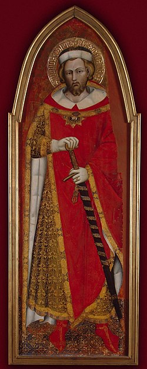

Pope Pontian
Pontian | |
|---|---|
| Bishop of Rome | |
|  | |
| Church | Catholic Church |
| Papacy began | 21 July 230 |
| Papacy ended | 28 September 235 |
| Predecessor | Urban I |
| Successor | Anterus |
| Personal details | |
| Born | Rome, Italy, Roman Empire |
| Died | October 235 Sardinia, Sardinia and Corsica, Roman Empire |
| Sainthood | |
| Feast day |
|
| Venerated in | Catholic Church, Eastern Orthodox Church |
{kind=link}
Pope Pontian (Latin: Pontianus; died October 235) was the bishop of Rome from 21 July 230 to 28 September 235.[1] In 235, during the persecution of Christians in the reign of the Emperor Maximinus Thrax, Pontian was arrested and sent to the island of Sardinia.
He abdicated to make the election of a new pope possible.[1] Resigning on 28 September 235, he was the first pope to do so. This allowed an orderly transition in the Church of Rome and so ended a schism that had existed in the Church for eighteen years. Some accounts say he was beaten to death only weeks after his arrival on Sardinia.
Pontian is venerated as a saint in both the Catholic and Eastern Orthodox churches.
Life
[edit]A little more is known of Pontian than his predecessors, apparently from a lost papal chronicle that was available to the compiler of the Liberian Catalogue of the bishops of Rome, written in the fourth century. The Liber Pontificalis states that he was a Roman citizen and that his father's name was Calpurnius. Early Church historian Eusebius wrote that his pontificate lasted six years.[2]
Pontian's pontificate was initially relatively peaceful under the reign of the tolerant Emperor Severus Alexander. He presided over the Roman synod which approved Origen's expulsion and deposition by Pope Demetrius I of Alexandria in 230 or 231.[1][2] According to Eusebius, the next emperor, Maximinus, overturned his predecessor's policy of tolerance towards Christianity.[3] Both Pope Pontian and the Antipope Hippolytus of Rome were arrested and exiled to labor in the mines of Sardinia,[4] generally regarded as a death sentence.[5]
In light of his sentence, Pontian resigned, the first pope to do so, so as to allow an orderly transition in the Church of Rome, on 28 September 235. This date was recorded in the Liberian Catalogue and is notable for being the first full date of a papal reign given by contemporaries. This action ended a schism that had existed in the Church for eighteen years. Pontian was beaten to death with sticks.[2][4] He died in October 235. Like Pontian, Hippolytus did not survive his exile. The two may have reconciled with one another in Rome or in Sardinia before their deaths.[6]
Veneration
[edit]Pope Fabian had the bodies of both Pontian and Hippolytus brought back to Rome in 236 or 237, and had Pontian buried in the papal crypt in the Catacomb of Callixtus on the Appian Way.[4][7] The slab covering his tomb was discovered in 1909. On it is inscribed in Greek: Ποντιανός Επίσκ (Pontianos Episk; in English Pontianus Bish). The inscription "Μάρτυρ" (martyr) had been added in another hand.[1]
In the Eastern Orthodox Church and the General Roman Calendar of 1969, Pontian and Hippolytus are commemorated jointly on 13 August.[8][9] In those Catholic communities which use a historical calendar such as the General Roman Calendar of 1960, Pontian's feast day is celebrated on 19 November.[10]
San Ponziano, a titular church in Rome, is named in his honour. Churches named for Pontian are also found in Spoleto, Lucca, and Carbonia, Sardinia.[11]
Gallery
[edit]-
The Martyrdom of Saint Pontianus (Baltasar de Echave, c. 1612)
-
Interior of San Ponziano, Rome
{kind=link}
_-_S._Ponziano_05.JPG){kind=link}
See also
[edit]References
[edit]- ^ Jump up to: a b c d Kirsch, Johann Peter (1911). "Pope St. Pontian" in The Catholic Encyclopedia. Vol. 12. New York: Robert Appleton Company.
- ^ Jump up to: a b c Kelly, J.N.D. (1986). The Oxford Dictionary of Popes. Oxford: Oxford University Press. p. 16. ISBN 978-0-19-213964-1.
- ^ Papandrea, James L. (2012). Reading the Early Church Fathers: From the Didache to Nicaea. Paulist Press. ISBN 978-0809147519.
- ^ Jump up to: a b c Fr. Paolo O. Pirlo, SHMI (1997). "Sts. Pontian & Hippolytus". My First Book of Saints. Sons of Holy Mary Immaculate – Quality Catholic Publications. pp. 179–180. ISBN 978-971-91595-4-4.
- ^ G. W. Clarke, "Some Victims of the Persecution of Maximinus Thrax," Historia: Zeitschrift für Alte Geschichte, Bd. 15, H. 4 (November 1966): pp. 445–453.
- ^ Richard P. McBrien, Lives of the Popes (San Francisco: Harper Collins, 2000), 45.
- ^ McBrien, Lives of the Popes, 45.
- ^ "Latin Saints of the Orthodox Patriarchate of Rome".
- ^ Calendarium Romanum (Libreria Editrice Vaticana 1969), p. 146
- ^ Catholic Encyclopedia.
- ^ Rendina, Claudio (2007). Le chiese di Roma: storie, leggende e curiosità degli edifici sacri della Città Eterna, dai templi pagani alle grandi basiliche, dai conventi ai monasteri ai luoghi di culto in periferia. Newton Compton. ISBN 978-8854109315 – via Google Books.
Sources
[edit]- Herbermann, Charles, ed. (1913). . Catholic Encyclopedia. New York: Robert Appleton Company.
External links
[edit] Media related to Pope Pontian at Wikimedia Commons
Media related to Pope Pontian at Wikimedia Commons
{kind=link}
{kind=link}
{kind=link}